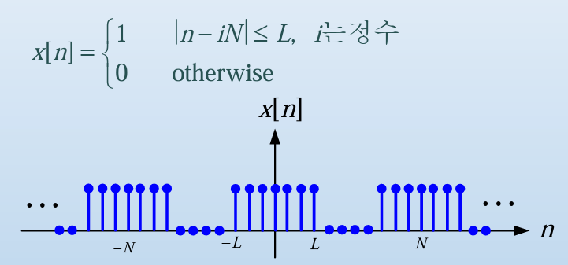

이산 시간 푸리에 해석
이산 시간에서의 푸리에 급수는 연속 시간에서의 푸리에 급수와 거의 비슷하지만 몇몇 특이한 성질을 해당 포스트에서 다루도록 하겠다.
이산 시간에서의 푸리에 급수
연속 시간에서 주기가 \(T_0\)인 \(x(t)\) 신호에 대한 푸리에 급수는 아래와 같이 쓸 수 있다.
\[x(t) = \displaystyle\sum^{\infty}_{k=-\infty}C_ke^{jk\omega_0t}, C_k = C_{-k}^*\]
\[C_k = \frac{1}{T_0}\int_{T_0}x(t)e^{-jk\omega_0t}dt\]
이산 시간에서 주기가 \(N\)인 \(x[n]\) 신호에 대한 푸리에 급수는 다음과 같다.
\[x[n] = \sum_{k=<N>}C_k e^{jk\Omega_0n} = \sum^{N-1}_{k=0}C_k e^{jk\cdot 2\pi/N\cdot n}, \;\; where\;\Omega_0 = 2\pi/N(\because\;\omega_0 = 2\pi/T_0)\]
\[C_k =\frac{1}{N}\sum_{n=<N>}x[n] e^{-jk\Omega_0n} = \frac{1}{N}\sum_{n = 0}^{N-1}x[n]e^{-jk\Omega_0 n}\]
식을 잘 살펴보면 적분과 시그마에 대한 구간이 다른 것을 알 수 있다. 그 이유에 대해 식으로 서술해보도록 하겠다.
\(k = <N>\)인 이유
\(\displaystyle x[n] = \sum_{k=<N>}C_k e^{jk\cdot 2\pi/N\cdot n}\)일 때 \(k=1\) 일 때와 \(k = N+1\)일때를 각각 계산하면
\(e^{j\cdot 2\pi/N\cdot n}|_{k=1}\)과 \(e^{j(N+1)\cdot 2\pi/N\cdot n}= e^{j2\pi\cdot n}\cdot e^{j2\pi/N\cdot n} = e^{j2\pi/N\cdot n}|_{k=N+1}\)이 나오게 된다.
이를 해석하면 basis인 \(e^{j2\pi/N\cdot n}\)이 주기 \(N\)을 가지고 반복되는 것을 의미한다. 즉 정리하면 basis가 반복되기 때문에 시그마의 구간을 \(k =<N>\)으로 한 것이다.
그렇다면 CT에서는 왜 모든 구간에 대해 적분을 했을까?
우선 CT에서 basis의 \(T_0\)가 3이라고 가정하면 \(e^{jk\cdot2\pi/3\cdot t}\)이 된다.
이때 \(k=0\)일 때와 \(k=T_0 = 3\)일 때를 계산해보면 각각 \(e^0 = 1\), \(\;e^{j2\pi t}\)가 된다. 이산 시간에서의 n은 상수이지만 연속 시간에서의 \(e^{j2\pi t}\)의 t는 상수가 아닌 수가 된다. 그러므로 \(e^{j2\pi t}\)는 항상 1이라고 볼 수 없고 t의 값에 따라 값이 변하게 된다.
이산 시간 푸리에 계수(\(C_K\))의 주기성
이산 시간에서의 푸리에 계수는 앞서 언급했던 것처럼 \(\displaystyle C_k =\frac{1}{N}\sum_{n=<N>}x[n] e^{-jk\Omega_0n}\)이다. DT에서의 \(C_k\)는 주기가 N, 주기성을 띈다. 이를 증명하면 아래와 같다.
\[C_{k+N} = \frac{1}{N}\sum_{n=<N>}x[n] e^{-j(k+N)\Omega_0n} = \frac{1}{N}\sum_{n=<N>}x[n] e^{-jk\cdot 2\pi/N\cdot n}e^{-jN\cdot 2\pi/N\cdot n}\]
\[C_{k+N} = \frac{1}{N}\sum_{n=<N>}x[n] e^{-jk\cdot 2\pi/N\cdot n} = C_k\]
이산 신호에 따른 주파수 분석
이산 시간에서 그림과 같이 주기성을 띄는 신호가 있을 때 해당 신호의 \(C_k\)는 아래와 같이 구할 수 있다.
\[for\; k= 0, \;\; C_0 = \frac{1}{N}\sum_{n=<N>}\cdot 1 = \frac{2L+1}{N}\]
\[for\; k \neq 0, \;\; C_k = \frac{1}{N}\sum_{n=-L}^{L}1\cdot e^{-jk\Omega_0n} \to \frac{1}{N}\frac{e^{jk\Omega_0L}[1-e^{-jk\Omega_0(2L+1)}]}{1-e^{-jk\Omega_0}} = \cdots\]
\[ = \frac{1}{N}\frac{sin(k\Omega_0\cdot(2L+1)/2)}{sin(k\Omega_0/2)}, k = 1, 2,3, \cdots,N-1\]
만약 duration은 그대로인데 주기가 늘어난다면 위와 같은 결과가 나온다. 주기가 늘어나면 진폭이 작아지고 샘플수가 많아지는 것을 확인할 수 있다.
반대로 주기는 그대로이고 duration이 변하게 된다면 스펙트럼의 대역폭이 변하는 것을 위 그래프를 통해 알 수 있다. duration과 대역폭은 반비례관계인것을 확인할 수 있다.